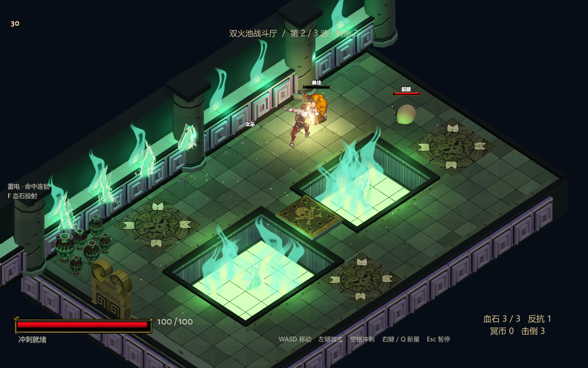

Hades 学习 Demo · 冥界试炼
基于 Godot 的三房间动作游戏学习 Demo，包含战斗、奖励与祝福选择、Boss 波次及胜负结算。提供 Windows 版本和中文游戏界面；项目非官方，仅限非商业学习。

放大查看 ↗三间房走完一局试炼
玩家从前厅选择雷电、守护或潮汐属性，进入双火池厅迎战两波敌人。清场后选一项祝福，再到守卫柱廊打 Boss。胜负结算后可以重试或回到主菜单。
属性与祝福之间的关系
属性会改变攻击行为和特效，清场祝福分别调整伤害、生命上限或冲刺冷却。两类选择落在同一轮战斗中，可以看到基础攻击和奖励如何共同影响后续打法。
Windows 版
项目用 Godot 制作，发布包包含可执行文件和同目录的资源包，解压后即可启动中文演示。作品仅供非商业学习。